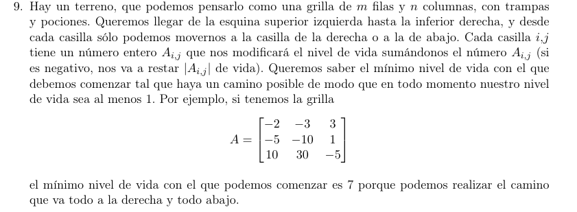
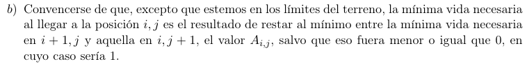

\(✓\)
\(✓\)
\(✓\)
 \(✓\)

\[\text{ TV}_{A} = \begin{cases} \infty & \text{si }(i > n \land j \neq m) \vee (j > m \land i \neq n) \\ 0 & \text{si }(i = n + 1 \land j = m) \vee (i = n \land j = m + 1) \\ \text{ minSig}(i,j) & \text{si }\text{ minSig}(i,j) > 0 \\ 1 & \text{sino } \end{cases}\]
\[\text{ minSig}(i,j) = \min(\text{TV}_{A}(i + 1,j),\text{TV}_{A}(i,j + 1)) - A_{ij}\]
minSig solo es para que sea menos verboso.
El primer caso devuelve infinito si “se va del tablero”, pero el caso anterior no fué \(A_{nm}\)
El segundo caso solo es un caso base para decir que ya pasó \(A_{nm}\)
El tercer y cuarto caso son lo explicado en el punto (b)

f solve(A, n, m):
memo = matriz n*m de valor nulo
f tv(i,j):
if (i>n and j!=m) or (j>m and i!=n):
ret inf
if (i=n+1 and j=m) or (i=n and j=m+1):
ret 0
if memo[i][j] no es nulo:
ret memo[i][j]
minSig = min(tv(i+1,j),tv(i,j+1))-A[i][j]
if minSig > 0:
memo[i][j] = minSig
else:
memo[i][j] = 1
ret memo[i][j]
ret tv(0,0)
Complejidad espacial: es una matriz de \(n \cdot m\) y la pila de recursiones está limitada por la cantidad de estados posibles, que es \(n \cdot m\), entonces es \(O(n \cdot m)\)
Complejidad temporal: también limitada por la cantidad de estados, dado que cada recursión es \(O(1)\), nos queda \(O(n \cdot m)\)
Nota: lo hice 1-indexed.
f solve(A, n, m):
memo = vector de inf de tamaño min(n,m)
si n>=m:
para cada i en 1...n:
para cada j en 1...m:
if i=n and j=m:
memo[i] = 0
else:
actual = min(memo[i],memo[i+1]) - A[i][j]
if actual > 0:
memo[i] = actual
else:
memo[i] = 1
sino:
para cada j en 1...m:
para cada i en 1...n:
if i=n and j=m:
memo[j] = 0
else:
actual = min(memo[j],memo[j+1]) - A[i][j]
if actual > 0:
memo[j] = actual
else:
memo[j] = 1
ret memo[1]
Complejidad espacial auxiliar: es un vector de tamaño \(\min(n \cdot m) \Rightarrow O\left( \min(n \cdot m) \right)\)
Complejidad temporal: en ambas opciones posibles son dos for loops anidados de \(O(n \cdot m)\)

Está en el item anterior.